Génie → Logiciel
-
Génie
-
L'ingénieur est guidé par la rigueur et la recherche de garantie
-
Capacité de répondre aux besoins d'une personne en proposant des
solutions innovatrices, durables et adaptées à l'environnement.
-
Utilise des outils et une méthodologie de travail
Logiciel
-
Un logiciel est de nature très complexe et représente un ensemble de comportements.
-
Contrainte accidentelle: limite des outils, imprévus, problèmes transitoires
-
Contrainte inhérente: complexité, conformité, invisibilité, discontinuité
Contenu
- Génie: Qualités de l'ingénieur
- Logiciel: Caractéristiques du logicel
Outils + Méthodologie
-
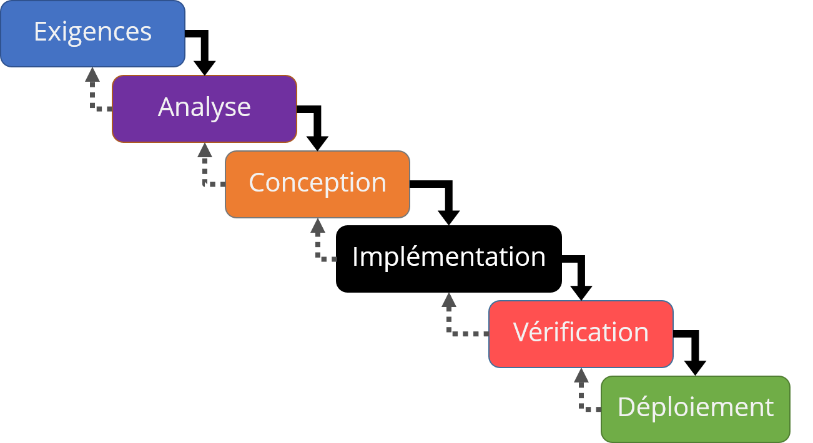
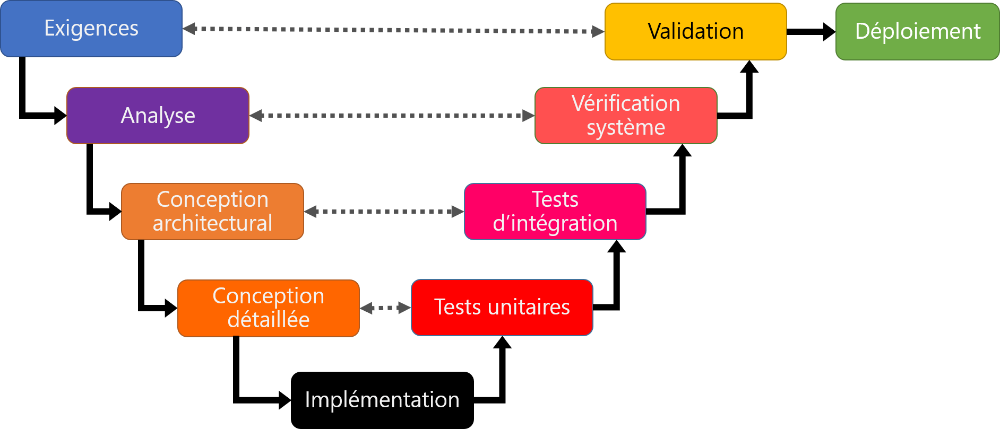
Modèle linéaire
Cascade, Modèle en V
- Plus on avance dans les étapes plus un changement coûte cher.
- Permet une conception bien pensée.
- Adapté à des projets dont les exigences sont bien comprises et les ressources
limitées.
-
Avantages 👍
- Simple et facile à suivre.
- Axé sur la documentation et l'analyse
- Permet une conception bien pensée
-
Inconvénients 👎
- Purement linéaire.
- Trop rigide
- Pas de feedback du client avant la livraison
- Vérification tardive
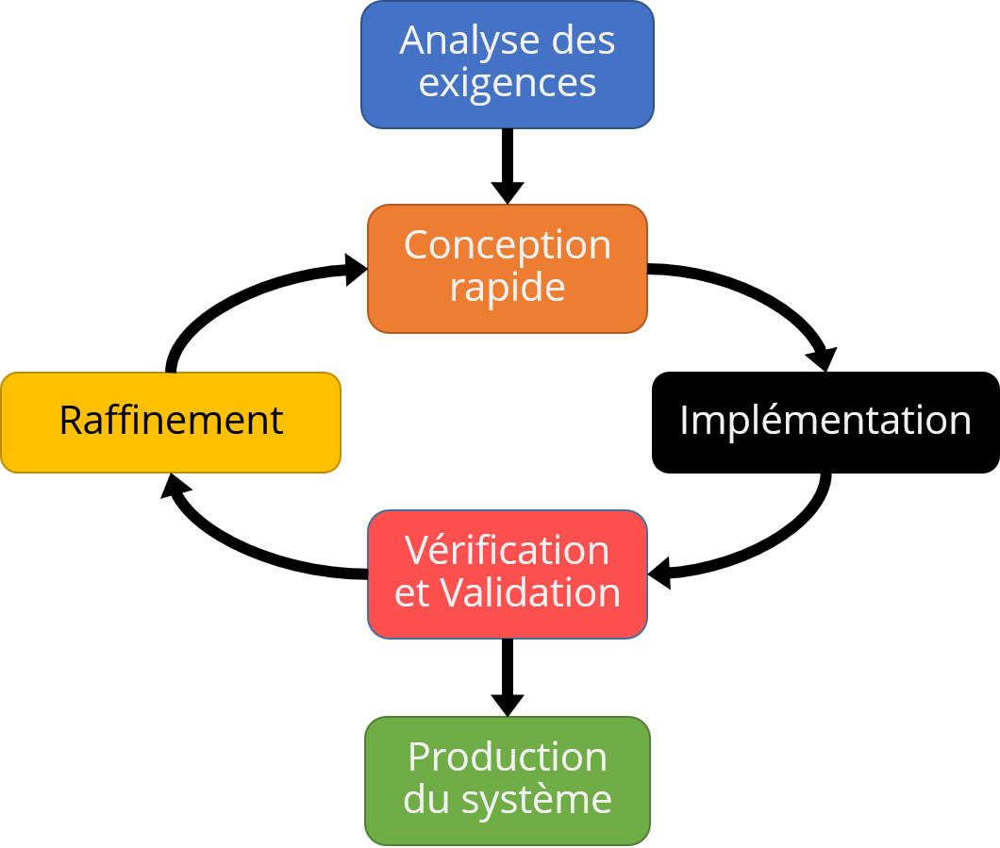
Modèle itératif
Prototypage, Code-et-modifie (non recommandé pour projet à livrer)
- Pertinent pour les projets où les exigences ne sont pas clairement
définies/comprises.
- Chaque version a pour but de se rapprocher du système cible plus que la version
précédente.
- Architecte la coquille du produit complet, puis améliore chaque composant.
-
Avantages 👍
- Réutilisation de prototypes.
- Produit visible très tôt
- Souci de vérification et validation du client anticipé
- Intégration facilitée, moins de raffinement
-
Inconvénients 👎
- Retravaille chaque itération.
- Produit livré à la fin
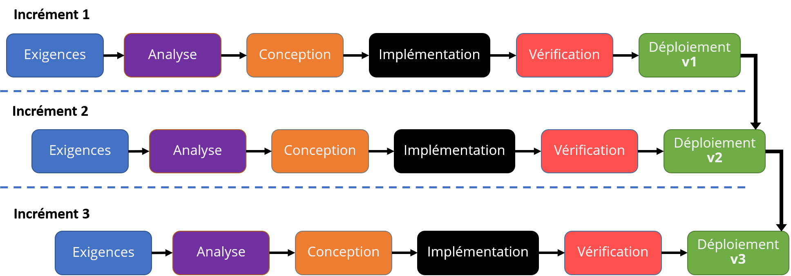
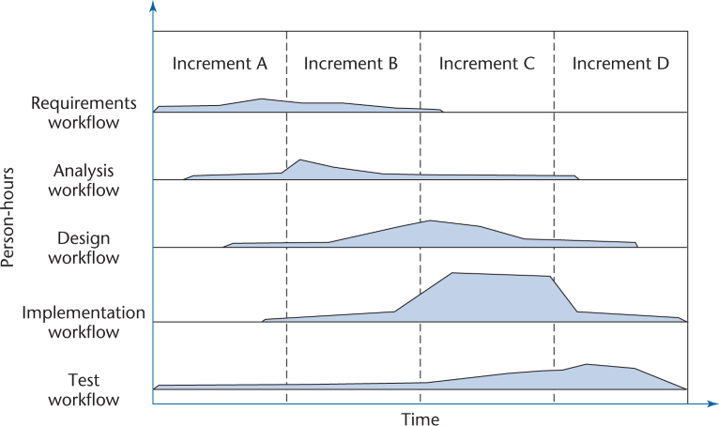
Modèle incrémental
Phase
- Pertinent pour les projets d'envergures.
- Pour gérer de plus grandes information, utiliser le raffinement par étapes.
- Permet de développer par ordre de priorité (on se concentre ce qui est important à
chaque étape).
- Chaque incrément abouti à une livraison.
-
Avantages 👍
- Développer par ordre de priorité.
- Livraison de composants rapides
- Facile de mesurer le progrès
-
Inconvénients 👎
- Pas de processus visible et clair à suivre.
- Tache d'intégration prend plus d'importance
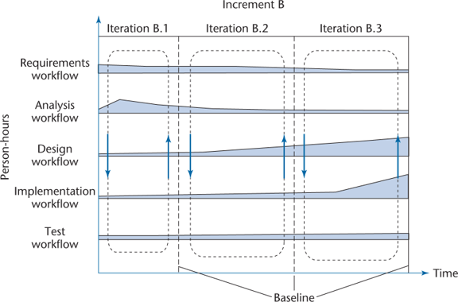
Modèle itératif & incrémental (I & I)
- Tous les flux d'activités (workflow) sont impliqués dans chaque incrément, mais
certains vont dominer plus.
- Plusieurs opportunités de tester, recevoir du feedback et s'ajuster.
- Robustesse de l'architecture peut être déterminée tôt dans le développement.
- Livrables spécifiques pour chaque incrément et chaque workflow.
- On peut atténuer et résoudre les risques plus tôt.
-
-
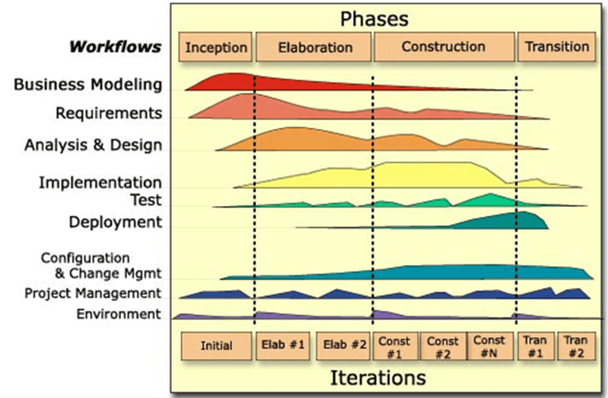
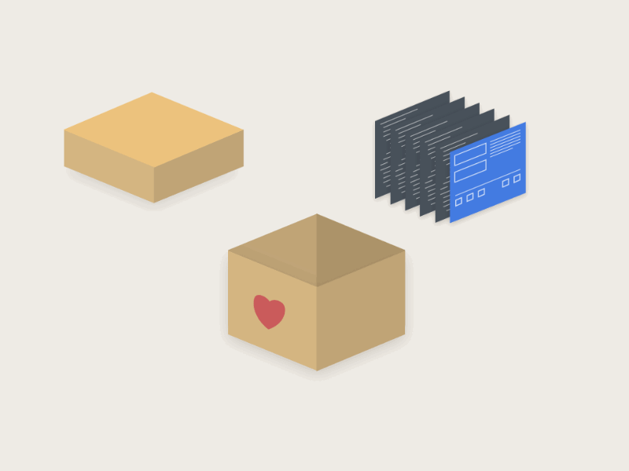
Flux de travail
-
Exigences: Déterminer ce dont le client a besoin.
-
Analyse: Analyser et affiner les exigences.
-
Conception: Affiner l'analyse et produire un
design implémentable par les programmeurs.
-
Implémentation: Traduire le design dans le langage
de programmation choisi.
-
Test: Évaluer les artéfacts produits jusqu'à
présent.
-
Déploiement: Installation du logiciel et
livraison de tous les artéfacts au client.
Phase
-
Création: Déterminer les nécessités et la faisabilité du logiciel à
développer.
-
Élaboration: Affiner et élaborer ce qui a été fait durant la phase
de création.
- Exigences (révision)
- Analyse
- Conception (architectural)
-
Construction: Produire une première version du logiciel,
fonctionnelle et de qualité.
- Conception
- Implémentation (itérative)
- Tests
-
Transition: Implantation du système dans l'environnement de
production.
-
-

-
Scrum
- Principe fondamental: capacité de réorienter la réalisation au cours de son avancement pour toujours être en phase avec les attentes des clients.
- Équipe Scrum: Propriétaire du produit (représentant des clients et utilisateurs), Scrum master, Équipe de développement (7±2, pluridisciplinaire)
-
Développement dirigé par les tests (TDD)
- Processus en petites étapes où les tests sont utilisés comme spécification.
- Écrire chaque test avant d'écrire le code source et remanier le code continuellement.
-
Développement dirigé par les fonctionnalités (FDD)
- Centré sur le client, il suit un processus d'itération à courte durée composoé de cinq activités de base.
- Permet de faire un suivi de l'avancement des fonctionnalités dans toutes les activités entreprises.
-
Extreme Programming (XP)
- Projet divisé en courtes itérations (déploiement fréquent).
- Chaque jour: réunion debout, formation des paires, rédiger les tests, programmer.
- Chaque semaine, le client fait des tests à partir des scénarios et on ajuste les prochaines itétations en conséquent.
-
Lean Development (ex: Kanban)
- Traduction du Lean manufacturing développé en gestion de la production (génie industriel).
- Kanban organise le travail sur un tableau sectionné en phases ou statuts d'avancements.
- Permet d'avoir une vue d'ensemble de l'avancement et de travailler efficacement en équipe
-
-
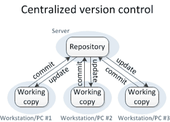
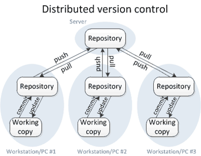

Caractéristique
-
Besoin de sauvegarde sécuritaire du code source (back-up)
-
Conserver une trace
-
Collaborer entre individus
-
Développement incrémental et itératif: plusieurs versions du code
Types de système VC
-
Centralisé
- Source de vérité unique
- Tout le monde communique obligatoirement avec le même dépot (repository)
- Exemples: SVN (Tortoise), CVS
-
Décentralisé
- Source de vérité relative
- Tout le monde communique avec le dépot externe de son choix
- Tout le monde possède une copie de tout l'historique ou état du dépot sur sa machine.
- Exemples: Git (Github, Bitbucket), Mercurian (Atlassian)
Commandes de base
-
Clone/Check out
git clone git@github.com:path/to/repository.git:
Récupération du remote dépot pour la première fois
-
Commit
git commit -m :
Soumet les modifications complétés et enregistrés en créant un identifiant unique rattaché à ce nouvel état.
-
Push
git push:
Envoie les changements (soumis par commit) dans le working copy (en local) vers un remote dépot (serveur).
-
Pull
git pull:
Récupération des changements apportés au remote dépot depuis la dernière récupération. Effectue un merge avec le working copy
-
Fetch
git fetch:
Vérification des changements apportés au dépot. Les changements sont placés dans le local repository et peuvent être comparés au working copy.
-
-
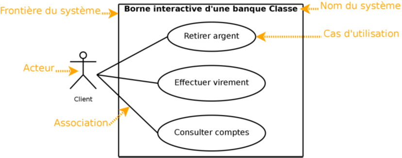
Cas d'utilisation
-
Capture le comportement d'un système tel qu'un utilisateur extérieur le voit.
Regroupe les besoins fonctionnels en unités cohérentes (cas d'utilisation), ayant un sens pour les acteurs.
-
Décrit une interaction entre le logiciel et ses utilisateurs (acteurs) qui initient les CUs.
-
Système: Cadre du sytème à développer
-
Acteur: A un but en utilisant le système. Joue un rôle d'interaction
-
But (objectif): Ce que l'acteur veut accomplir en interagissant avec le système. Chaque but est un CU.
-
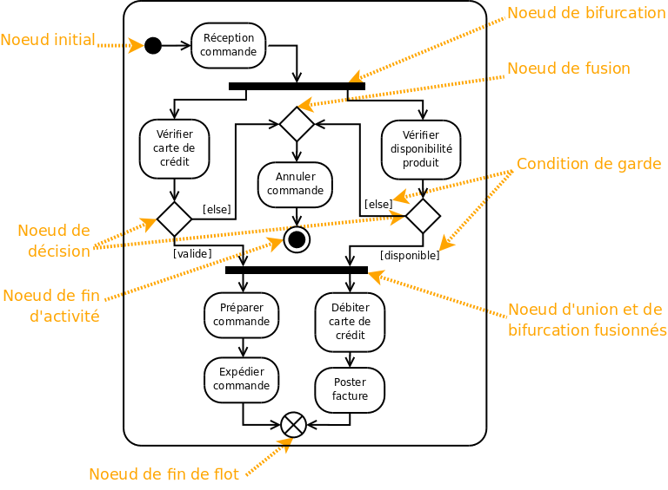
Diagramme d'activités
-
Permet de mettre l'accent sur les traitements ⇒ Particulièrement adapté à la modélisation du cheminement de flots de contrôle et de flots de données.
-
Représenter graphiquement le comportement d'une méthode ou le déroulement d'un cas d'utilisation.
-
Actions: Plus petit traitement en UML qui a une incidence sur l'état du système ou en extrait une information.
-
Activités: Définit un comportement décrit par un séquencement d'actions.
-
Transitions: Passage d'une activité/action à une autre. Elles spécifient l'enchaînement des traitements et définissent le flot de contrôle.
-
Objets: Représente l'existence d'un objet généré par une action dans une activité et utilisé par d'autres actions.
-
Nœuds de contrôle: initial, fin d'activité, fin de flot, décision, fusion, bifurcation, d'union
-
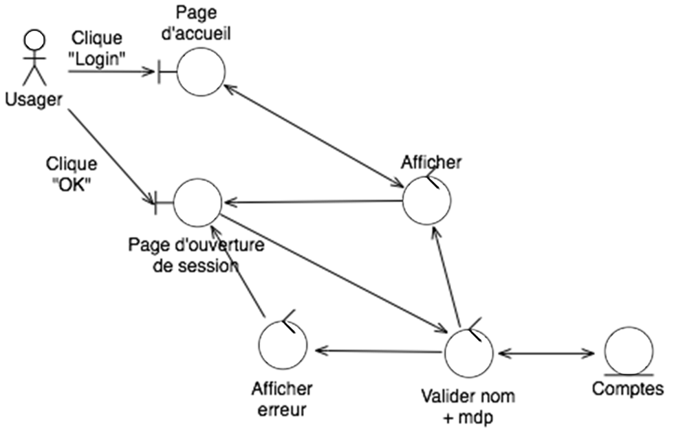
Diagramme ECB (Entité-Controle-Interface)
-
Utilie pour représenter un premier modèle conceptuel du système.
-
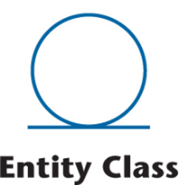 Classes d'entité: Concepts et information qui vit et persiste dans le logiciel
-
Classes d'interface: Interactions entre le système et l'environnement/acteurs
-
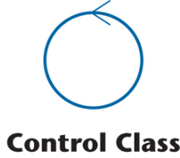 Classes de contrôle: Calculs et algorithmes complexes
-
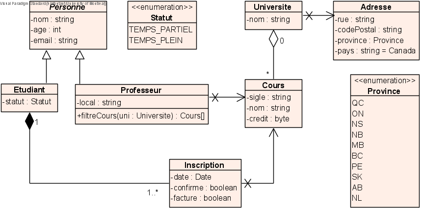
Diagramme de classes
-
Permet de décrire la structure statique du logiciel. Indique les contraintes sur les objets et leurs relations.
-
Classes: attributs, opérations
-
Visibilité: private -, protected #, package ~, public +
-
Relations: association, agrégation, composition, généralisation/spécialisation
-
Multiplcité: nombre d'instances participantes (
0..1 | 1 | 0..* |
0..k | k..* | n..m
)
-
Roles: Nom (fonction sémantique) donné à une classe dans une association (indispensable pour les associations réflexives).
-
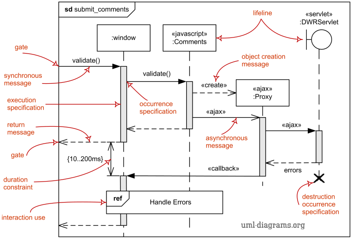
Diagramme de séquences
-
Décrit les CU en mettant en évidence les interactions entre les instances des classes (objets) du logiciel.
-
Montre la séquence au cours du temps des échanges de messages (numérotés) entre les objets participant à un scénario.
-
Type de messages: envoie d'un signal, invocation d'une opération, création ou destruction d'une instance
-
Messages synchrones: attend la réponse du destinataire avant de poursuivre.
-
Messages asynchrones: poursuit son activité sans attendre la réponse à son message.
-
Fragments: Sections démarquée d'un diagramme de séquence.
OPT (optionnel, if),
ALT (alternatives, if-then-else),
LOOP (répétition, while),
REF (référence à une interaction)
Contenu
- Modèle de développement: Linéaire (Cascade, V), Itératif, Incrémental
- Processus unifié: Flux et Phase (itératif et incrémental)
- Agile: TDD, XP, Scrum
- Gestion de versions: Centralisé (SVN), non-centralisé (Git)
- UML: Diagramme de CU, diagramme d'activités, diagramme de classes, diagramme de séquence
Processus de développement
-
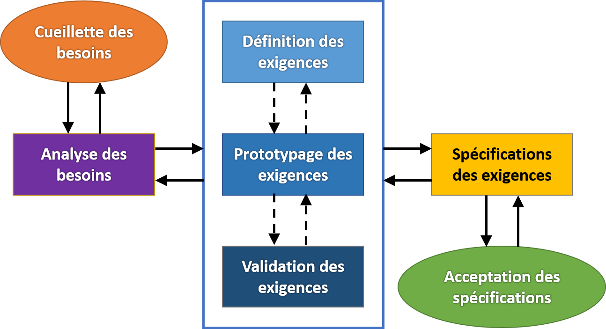
Ingénierie des exigences
-
Cueillette des besoins: Entrevue, Sondage, Observation
-
Compréhension du domaine: Glossaire, Persona, Prototypage
-
Analyse des besoins et risques
- Besoins fonctionnels: Spécifie une action que le système doit accomplir sous forme d'interaction entre le système et son environnement.
- Besoins non-fonctionnels: Spécifie des propriétés du logiciel même (utilisabilité, fiabilité, performance, sécurité, interopérabilité...)
- Priorisation des besoins: Par valeur d'affaire ou par sévérité de risque.
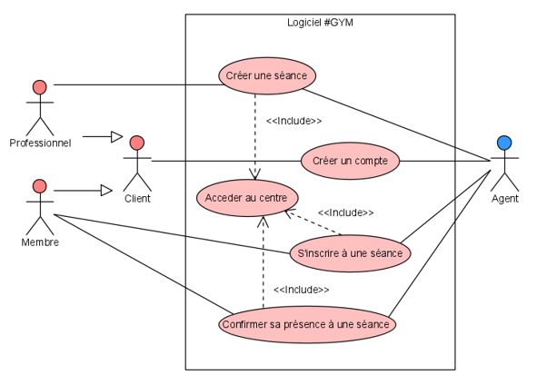
Cas d'utilisation
-
Capture le comportement d'un système tel qu'un utilisateur extérieur le voit.
Regroupe les besoins fonctionnels en unités cohérentes (cas d'utilisation), ayant un sens pour les acteurs.
-
Décrit une interaction entre le logiciel et ses utilisateurs (acteurs) qui initient les CUs.
Scénario
-
Séquence spécifique d'interactions entre les acteurs et le système et d'actions subséquentes du système
-
Acteurs: Principal (initie le CU) et secondaires (intervient dans la réalisation du CU).
-
Scénario principal: Décrit ce qui se déroule normalement, quand il n'y a pas d'erreur.
-
Scénario alternatif: Variantes du scénario principal. Exceptions que le système doit traiter.
-
Préconditions nécessaires pour entamer le scénario principal.
-
Postconditions de l'état du système lorsque le CU est complété avec succès.
-
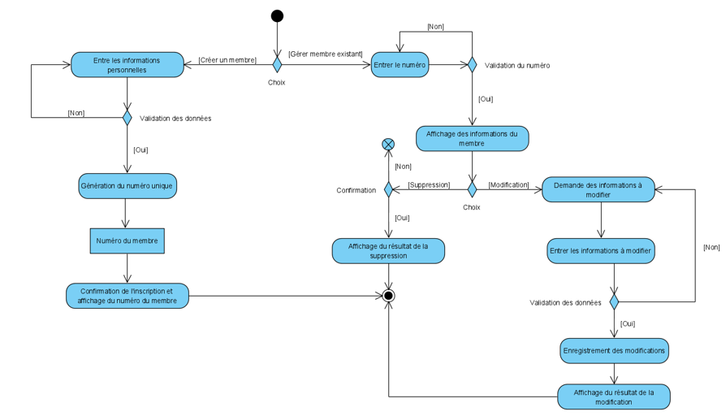
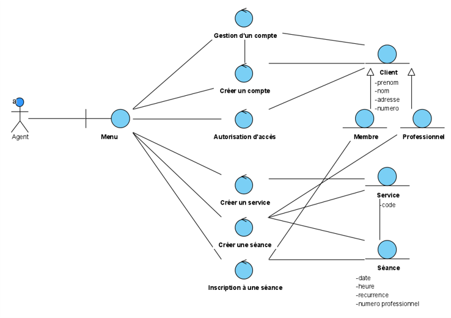
Caractéristique de l'analyse
-
Pas nécessairement compréhensible par le client.
-
Force le client et les développeurs à prendre des décisions difficiles le plus tôt possible.
-
Déterminer la partie à informatiser, les ressources physiques nécessaires, les exigences conceptuelles et matérielles.
Modèle d'analyse complet
-
Modèle fonctionnel
- Définir les fonctionnalités du système
- Cas d'utilisations + scénarios
-
Modèle dynamique
- Définir le comportement du système
- Activités + Flux de données
-
Modèle d'objet
- Concepts manipulés par le système et leurs propriétés
- Classes, composants
-
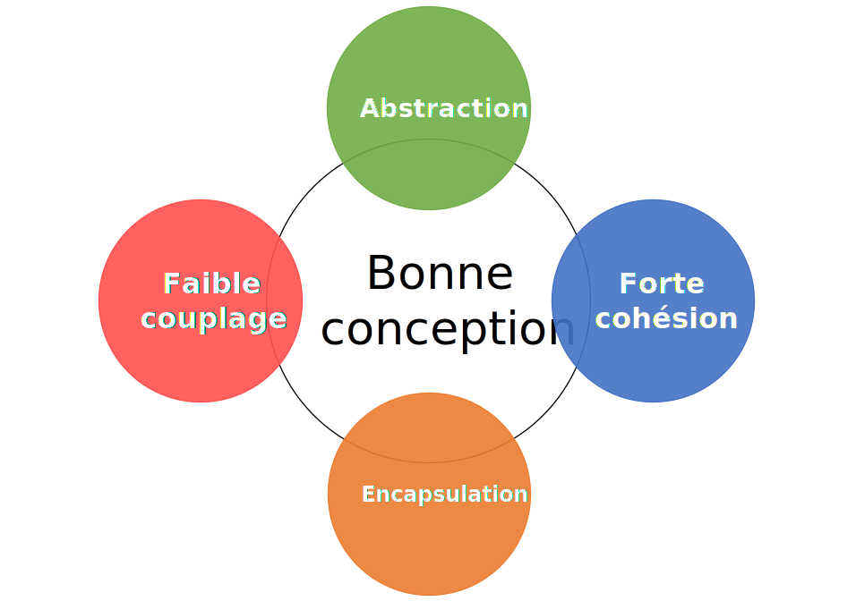
Objectifs
- Forte cohésion: Éléments ne sont pas réunis dans un même module par hasard, ils forment un tout pour réaliser une tâche
- Faible couplage: Modules sont relativement indépendants : dépendent le moins possible des éléments d'autres modules
- Abstraction: Décomposition intuitive exprimée en termes du problème, qui permet de se concentrer sur un module à la fois
- Encapsulation et dissimulation d'information: Détails d'implémentation propices à changer sont cachés derrière une interface stable
Conception architecturale (haut niveau)
- Définit la structure et l'organisation générale du logiciel
- Décrit les modules clés du domaine, les relations entre eux et contraintes
Conception détaillée (bas niveau)
- Réalise chaque cas d'utilisation
- Respecte le plan de la conception architecturale
- Décrit le fonctionnement interne de chaque module
- Prépare l'implémentation
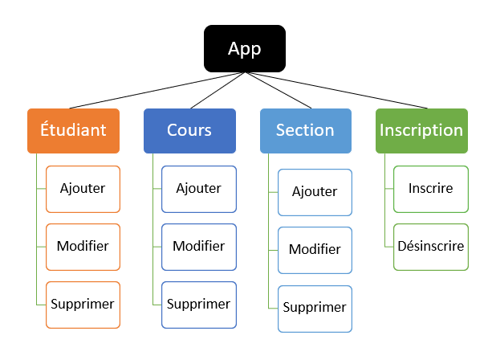
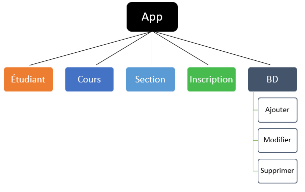
Décomposition du système
- Décomposer le système en petits modules qui sont individuellement plus faciles à concevoir et implémenter
- Décomposition fonctionnelle: Décomposer le système en modules par fonctionnalité
- Système est partitionné en modules distincts mis en relation
- Établir une hiéarchie: Facilite la compréhension de la structure par niveau d'abstraction
Interface: partie publique
- Quoi offrir? Analyse et conception
- Ensemble des ressources (opérations, attributs) rendues accessibles aux autres modules (clients)
- Conception d'un module ne nécessite que les interfaces des modules qu'il pourra utiliser
Implémentation: partie privée
- Comment le réaliser? Conception et implémentation
- Façon dont les ressources sont concrètement représentées et réalisées dans le module
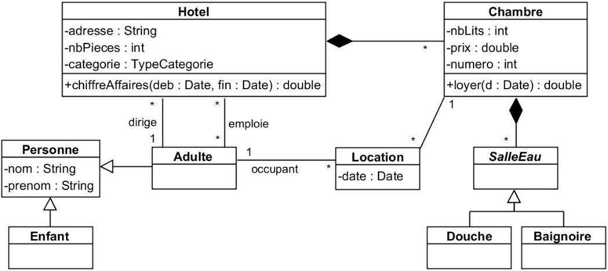
Diagrammes utiles
Diagramme de classe
- Vue détaillée du design
- Plus de classes que dans le modèle d'analyse
- Identifier et caractériser les attributs et méthodes de chaque classe en pensant à l'implémentation
Diagramme de séquence
- Décrit les interactions entre les objets, instances du diagramme de classe
- Un diagramme de séquence par CU
Contenu
- Exigences: Élaboration des besoins du client et compréhension du domaine
- Analyse: Analyse des exigences et définition des contraintes physiques et conceptuelles
- Conception: Choix d'architecture et modélisation d'une solution implémentable
- Implémentation: Traduction du design en code exécutable
- Tests: Vérification et validation des artéfacts produits
- Déploiement: Installation du logiciel et livraison des artéfacts au client
- Maintenance: Tout changement de n'importe quel artéfact du logiciel une fois déployé
Architecture + Conception
-

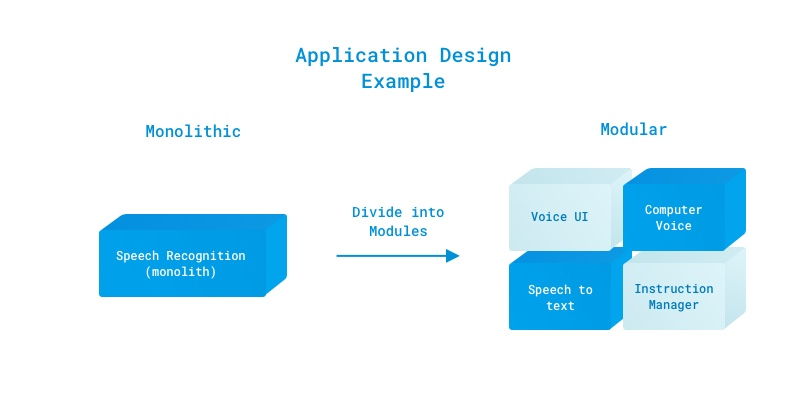
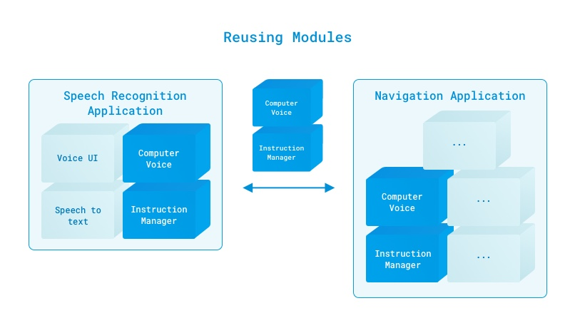
Caractéristique
-
Bonne conception 👍
- Faible couplage et forte cohésion
- Réutilisation: Réutilisation d'un composant d'un produit pour faciliter le développement d'un autre produit ayant des fonctionnalités différentes
- Conception modulaire: Décomposition en modules indépendants et interchangeables qui contiennent tout ce qui leur est nécessaire pour exécuter un aspect d'une fonctionnalité
- Conception évolutive: Minimiser l'effort d'apporter des modifications au logiciel après le développement initial
-
Mauvaise conception 👎
- Rigidité: Logiciel difficile à modifier car chaque changement impacte beaucoup trop de parties du système
- Fragilité: Quand on effectue une modification, des parties imprévues du système ne fonctionnent plus
- Immobilité: Difficile de réutiliser un composant dans une autre application car on ne peut la démêler de l'application courante
Conception modulaire vs. monolithique
- Les deux designs sont équivalent d'un point de vue fonctionnel
-
Design monolithique
- Difficile à comprendre
- Difficile à étendre ou améliorer
- Difficile à réutiliser dans un autre produit
-
Design modulaire
- Maximiser les relations au sein du module
- Minimiser les relations entre les modules
- Facilite la modification d'un système
- Favorise la réutilisation d'un module
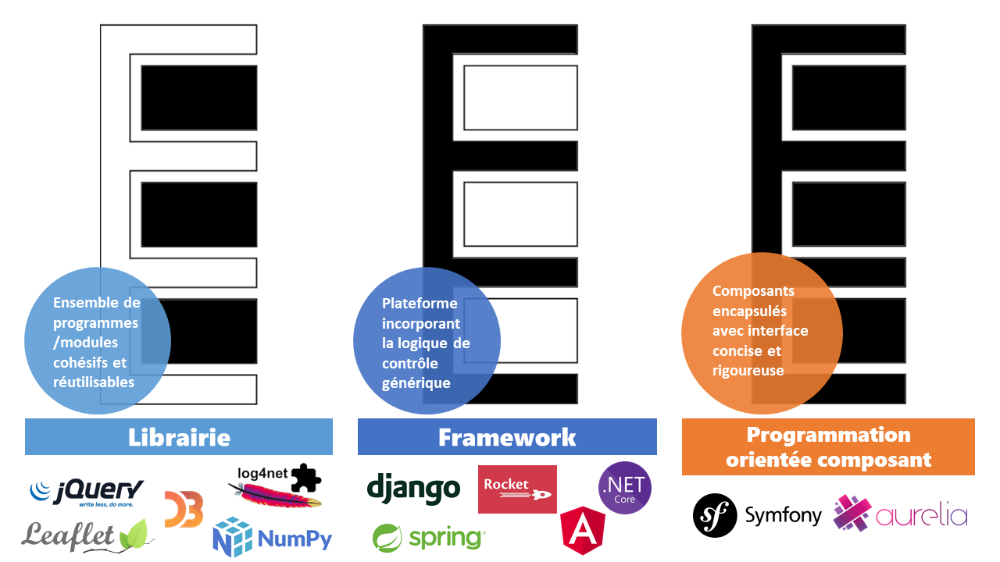
Réutilisation
-
Librairie: Ensemble de programmes/modules cohésifs et réutilisables. Utilisateur de la librairie est responsable de la logique de contrôle.
-
Framework: La plateforme incorpore la logique de contrôle générique. Utilisateur personnalise les fonctionnalités génériques pour les besoins de l'application.
-
Programmation orientée composant: Combine les deux approches. Mise en place d'une plateforme applicative et identification des librairies réutilisables que la plateforme peut invoquer.
-
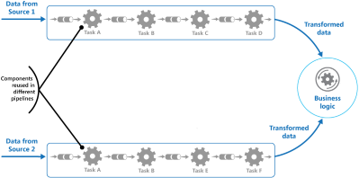


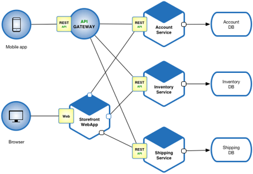
-
Pipes et filtres
- Modules organisés en filtres communiquant via des pipes.
- Traitement batch en plusieurs étapes
- Exécution concurrente de filtres, synchronisation des flux parfois nécessaire
- Usages: Compilateur, Traitement d'image, Lignes de déploiement
-
En couche (ex: 3-tier)
- Système organisé en couches hiérarchiques.
- Chaque couche fournit un service à la couche supérieur et en reçoit de la couche inférieure
- Usages: Réseaux, Application Web
-
MVC (Model-View-Controller)
Divise une application en trois composant: Modèle, Vue et Controleur.
- Modèle: encapsule l'état de l'application et répond aux demandes d'état
- Vue: fait le rendu du modèle et affiche l'information à l'utilisateur
- Controleur: définit le comportement de l'application et traite les requêtes.
- Usages: Majorité des applications web, Framework
-
Client-serveur
Divise le système en deux parties: Serveur et Clients
- Clients: reçoivent des services des serveurs et doivent pouvoir contacter les serveurs
- Serveurs: fournissent des services aux clients et autres serveurs
- Usages: Email, Système bancaire
-
Peer-to-peer
- Chaque nœud (peer) joue à la fois le rôle du client et du serveur
- Favorise la fiabilité du système (tolérance aux pannes)
- Mise à l'échelle facile (grandit avec le nombre de pairs)
- Usages: Blockchain, BitTorrent
-
Microservice
- Collection de petits services autonomes, indépendants et restraints à une fonction
- Service accessible via une API (fournisseur de service), accessible par internet
- Usages: Amazon web services (AWS), Azure
-
Caractéristiques
- Objet: Représente une entité réelle ou conceptuelle, singulière et identifiable avec un rôle bien défini dans le domaine du problème
- Classe: Représentation d'un ensemble d'objets qui partagent une structure, un comportement et une sémantique en commun
- Héritage: Relation de partage de la structure et du comportement
- Polymorphisme: Une opération définie dans plus d'une classe qui prend différentes implémentations
- Encapsulation: Regroupement de concepts reliés en une seule unité référée par un seul nom
- Abstraction: Utilisation de l'encapsulation pour restreindre la perception depuis l'extérieur sur les mécanismes internes au logiciel
- Généricité: Mécanisme pour que les clients décident du type d'objets dans une classe à travers des paramètres passé lors de la déclaration et qui est évalué lors de la compilation
Contenu
- Principes de conception: Couplage, cohésion, module
- Architecutre: Pipes et filtres, En couche, MVC, Client-serveur, Peer-to-peer, Microservices
- Paradigme orienté-objet: Encapsulation, Classes et objets, Héritage, Polymorphisme
- Patrons de conception: Singleton, Fabrique, Composite, Patron de méthode, Stratégie, Adapteur